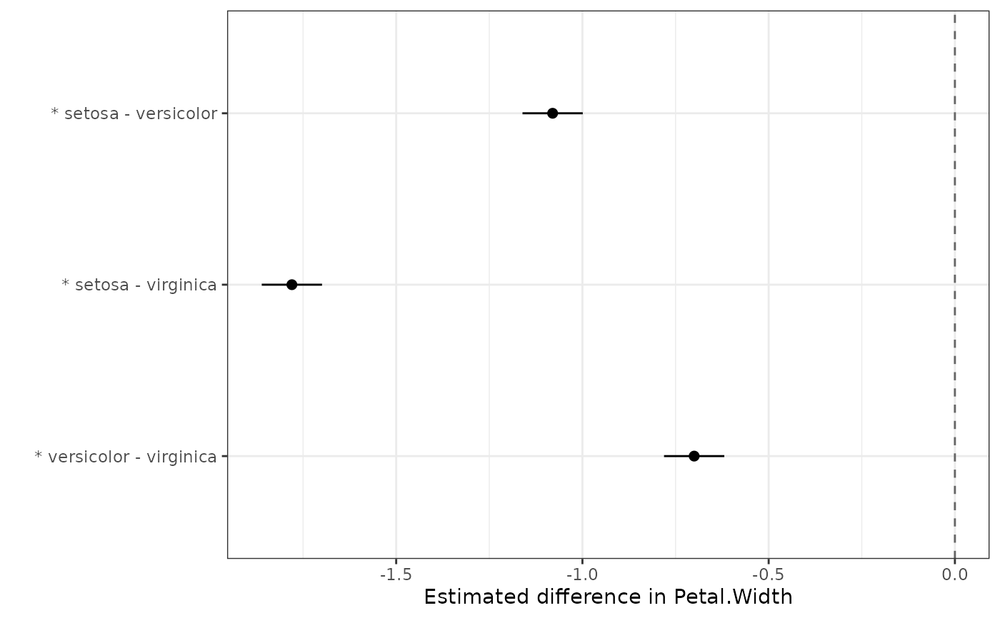

Pairwise comparisons of predicted means
Source:R/autoplot.R, R/pairwise_comparisons.R
pairwise_comparisons.RdTest a chosen set of pairwise differences between the predicted means of a
fitted model, with multiplicity adjustment over the chosen set and optional
splitting into independent subgroups. Unlike multiple_comparisons(), which
is means-centric and summarises all pairwise comparisons via a compact
letter display, pairwise_comparisons() is difference-centric: it returns a
tidy table with one row per requested comparison. This honestly represents
selective and irregular comparison sets, for which letter groupings are not
valid.
Usage
# S3 method for class 'pairwise_comparisons'
autoplot(object, ..., axis_rotation = 0, label_rotation = 0)
pairwise_comparisons(
model.obj,
classify,
pairs = NULL,
contrasts = NULL,
adjust = "holm",
by = NULL,
sig = 0.05,
include_means = TRUE,
descending = NULL,
...
)
# S3 method for class 'pairwise_comparisons'
print(x, decimals = 2, ...)Arguments
- object
A
pairwise_comparisonsobject.- ...
Other arguments passed to the model-specific prediction methods (e.g. ASReml-R
predict()arguments).- axis_rotation
Rotation (degrees) of the x-axis (estimate) labels.
- label_rotation
Rotation (degrees) of the y-axis (comparison) labels.
- model.obj
An
asreml,aov,lm,lme(nlme::lme()) orlmerMod(lme4::lmer()) model object.- classify
Name of the predictor variable(s) to compare, as a string. Interactions are specified with
:(e.g."Trt:Site").- pairs
The comparisons to test.
NULL(default) tests all pairwise comparisons. Otherwise either a character vector of"level1-level2"labels (levels of an interaction joined by:, the two sides of a pair separated by-, e.g."A:X-B:Y"), or a list of length-2 character vectors (e.g.list(c("A:X", "B:Y"))). Level names may contain-; the list form is only needed if a pair is genuinely ambiguous. See Details.- contrasts
An optional named list of general linear contrasts to test instead of
pairs. Each element is a named numeric vector of coefficients keyed by level label (e.g.list("A vs B & C" = c(A = 1, B = -0.5, C = -0.5))), and the list names become thecomparisonlabels. The estimate is the corresponding linear combination of the predicted means. Mutually exclusive withpairs; coefficients should sum to zero (a warning is issued otherwise).include_meansdoes not apply to this form. See Details for how the standard error and degrees of freedom are obtained.- adjust
The method used to adjust p-values for multiplicity over the chosen set, passed to
stats::p.adjust(). Default is"holm". Any stats::p.adjust.methods value is accepted."tukey"is not valid here (it is exact only for the complete set of all pairwise comparisons — usemultiple_comparisons()for that).- by
A character vector of one or more
classifyfactors over which to split the comparisons. The samepairsset is tested, and adjusted, independently within each level (or combination of levels) ofby, with no pooling across groups. DefaultNULL. See Details.- sig
The significance level for the confidence intervals, numeric between 0 and 1. Default is 0.05.
- include_means
Logical; if
TRUE(default) the predicted mean of each side of the comparison is included aslevel1.meanandlevel2.meancolumns, immediately afterestimate. SetFALSEfor the differences only.- descending
Tri-state control of row ordering within each by-group.
NULL(default) keeps the input order ofpairs;FALSEsorts ascending by estimate;TRUEsorts descending by estimate.- x
A
pairwise_comparisonsobject.- decimals
Number of decimal places to display. Default is 2. The p-value is shown to 3 significant figures (rather than rounded) so very small p-values do not collapse to zero.
Value
autoplot.pairwise_comparisons() returns a ggplot2 object: a
forest plot of the estimated differences with their confidence intervals
and a dashed reference line at zero, faceted by the by variable(s) when
present. Comparisons that are significant at the adjusted sig level are
flagged with an asterisk (*) — prefixed to the y-axis label when
unfaceted (keeping the labels right-justified against the axis), or beside
the interval when faceted by by.
A data.frame of class pairwise_comparisons with one row per
(group × comparison) and columns: any by column(s), level1, level2,
comparison, estimate, (optionally level1.mean and level2.mean),
std.error, statistic, df, p.value (adjusted), conf.low and
conf.high. Stored at full precision; rounding for display is controlled
by print.pairwise_comparisons(). For the contrasts form, the
level1/level2 and mean columns are omitted and comparison holds the
contrast name. If any levels were aliased (not estimable) in the model they
are dropped from the comparisons (with a warning) and recorded in an
aliased attribute.
print.pairwise_comparisons() invisibly returns x.
Details
Relationship to the other comparison functions
pairwise_comparisons(), multiple_comparisons() and
reference_comparisons() share the same predicted means and standard errors
of differences; they differ in which comparisons they report. Testing all
pairs here (pairs = NULL) with a given adjust yields the same adjusted
p-values as multiple_comparisons() with that adjust, while
reference_comparisons() is the special case of comparing every level against
a single control. Tukey's HSD is exact only for the complete set of all
pairwise comparisons, so adjust = "tukey" is not valid for
pairwise_comparisons() (use multiple_comparisons()).
pairs syntax and sign convention
The estimate for a pair is mean(level1) - mean(level2), in the order
written ("A-B" gives A - B). The level1 and level2 columns make the sign
unambiguous. With : joining interaction cells and - separating the two
sides of a pair, a level name may itself contain -: each - is tried as the
separator and the split that yields two valid levels is used (so "A-D-xyz"
resolves to A versus D-xyz when those are the real levels). Only when more
than one split is valid is the pair genuinely ambiguous, and the list form is
then required (the error shows the candidate splits). Reversed or duplicated
pairs ("A-B" and "B-A") are de-duplicated with a warning, since duplicates
would inflate the adjustment family.
For an interaction classify, the :-joined components of each level label
must be in the same order as classify (e.g. "A:X" for
classify = "Trt:Site", not "X:A"); the same applies to the level names
used in contrasts. A label that names no existing cell is rejected with the
list of available levels, but a mis-ordered label that happens to name
another valid cell is used silently — so when the factors share level names,
check the component order matches classify.
by semantics
by must be a subset of the classify factors. Within each group, pair
labels reference the remaining (non-by) factor levels. For example,
classify = "Trt:Site", by = "Site", pairs = "A-B" compares Trt levels A
and B within each Site. A group with fewer than two levels is skipped with a
warning. In an unbalanced design a requested comparison may reference a level
that is absent from some groups: such a comparison is skipped (with a warning)
in the groups where it cannot be computed and reported in those where it can.
A level that is absent from every group — or that was aliased — is instead
an error, since that indicates a mistake rather than an incomplete design.
Standard error and degrees of freedom for contrasts
The contrast variance is c' V c, where V is the variance-covariance matrix
of the predicted means taken directly from the fitting engine (no
reconstruction). The degrees of freedom depend on the engine:
For models predicted via
emmeans(aov,lm,nlme::lme(),lme4::lmer(), andaovwithError()strata) the estimate, standard error and degrees of freedom are obtained directly fromemmeans::contrast()on the model's reference grid. The degrees of freedom are therefore the exact contrast df for that engine (Satterthwaite or Kenward-Roger for mixed models, containment foraov/Error()), including for contrasts spanning more than two levels.For
asremlmodelsVis the prediction error covariance frompredict(..., vcov = TRUE), and the degrees of freedom are the term's denominator df fromasreml::wald(denDF = "default")(a single Kenward-Roger-style value shared by all contrasts within the term, as ASReml-R does not provide a per-contrast approximate df).
Transformations
Comparisons are reported on the model scale. A difference of transformed means does not back-transform to a difference on the original scale (for log/logit it is a ratio), so back-transformation is not attempted; a warning is issued if the response appears to be transformed in the model formula.
Confidence intervals
The per-comparison confidence intervals are not simultaneity-adjusted: as
with the confidence-interval/letter note in multiple_comparisons(), an
interval may exclude zero while the adjusted p-value is >= sig. When this
happens a one-time message() notes it (suppressible with
suppressMessages()).
Supported model types
The comparison functions (multiple_comparisons(), pairwise_comparisons()
and reference_comparisons()) work with any model for which a
get_predictions() method is defined. These are currently:
| Model class | Fitted by | Notes |
aov, lm | stats::aov(), stats::lm() | Fixed-effects linear models. |
aovlist | stats::aov() with an Error() term | Multi-stratum aov; gives comparison-specific (matrix) degrees of freedom. |
lme | nlme::lme() | Linear mixed model. |
lmerMod | lme4::lmer(), lme4breeding::lmebreed() | Linear mixed model. lmebreed() (relationship-based) models also carry class lmerMod; comparisons target the fixed-effect means with Kenward-Roger degrees of freedom, and correctly reflect the relationship structure (validated against ASReml-R). |
lmerModLmerTest | lmerTest::lmer() | As lmerMod, with Satterthwaite degrees of freedom. |
asreml | ASReml-R asreml() | Linear mixed model (commercial; not on CRAN). |
afex_aov | afex aov_car() / aov_ez() / aov_4() | Factorial / repeated-measures ANOVA; gives comparison-specific (matrix) degrees of freedom. |
glmmTMB | glmmTMB glmmTMB() | Generalized linear mixed model. Predictions are on the link scale with asymptotic (infinite) degrees of freedom; supply trans to back-transform. |
mmes | sommer mmes() | Linear mixed model, via sommer's native predict(). SED from the prediction covariance; asymptotic (infinite) degrees of freedom (sommer provides none). |
ARTool (art) models are supported by resplot() but not by the comparison
functions: the aligned rank transform makes mean-based comparisons inappropriate.
Use ARTool::art.con() for contrasts on ART models instead.
sommer mmer models (the legacy interface) are supported by resplot() but
not by the comparison functions: current sommer provides no predict() method
for mmer. Refit with sommer::mmes() to use the comparison functions.
To add a new engine, write a get_predictions.<class>() method returning a
list with elements predictions, sed, df, ylab and aliased_names
(plus emmeans_grid for engines backed by emmeans::emmeans()), and add a
row to the table above.
See also
multiple_comparisons() for means-and-letters output, and
reference_comparisons() for comparing every level against a single
control. For guidance on choosing between them and on multiplicity
adjustments, see
vignette("choosing-multiple-comparisons", "biometryassist").
Examples
# Forest plot of pairwise differences (significant comparisons marked with *)
dat.aov <- aov(Petal.Width ~ Species, data = iris)
pc <- pairwise_comparisons(dat.aov, classify = "Species")
autoplot(pc)

dat.aov <- aov(Petal.Width ~ Species, data = iris)
# All pairwise comparisons (Holm-adjusted by default)
pairwise_comparisons(dat.aov, classify = "Species")
#> Pairwise comparisons of means
#> Classify: Species
#> Adjustment method: holm
#> Significance level: 0.05
#>
#> level1 level2 comparison estimate level1.mean level2.mean
#> 1 setosa versicolor setosa - versicolor -1.08 0.25 1.33
#> 2 setosa virginica setosa - virginica -1.78 0.25 2.03
#> 3 versicolor virginica versicolor - virginica -0.70 1.33 2.03
#> std.error statistic df p.value conf.low conf.high
#> 1 0.04 -26.39 147 2.51e-57 -1.16 -1.00
#> 2 0.04 -43.49 147 2.39e-85 -1.86 -1.70
#> 3 0.04 -17.10 147 8.82e-37 -0.78 -0.62
# A selected subset
pairwise_comparisons(
dat.aov,
classify = "Species",
pairs = c("setosa-versicolor", "setosa-virginica")
)
#> Pairwise comparisons of means
#> Classify: Species
#> Adjustment method: holm
#> Significance level: 0.05
#>
#> level1 level2 comparison estimate level1.mean level2.mean
#> 1 setosa versicolor setosa - versicolor -1.08 0.25 1.33
#> 2 setosa virginica setosa - virginica -1.78 0.25 2.03
#> std.error statistic df p.value conf.low conf.high
#> 1 0.04 -26.39 147 1.25e-57 -1.16 -1.0
#> 2 0.04 -43.49 147 1.59e-85 -1.86 -1.7
# A general (non-pairwise) contrast: setosa vs the average of the others
pairwise_comparisons(
dat.aov,
classify = "Species",
contrasts = list(
"setosa vs rest" = c(setosa = 1, versicolor = -0.5, virginica = -0.5)
)
)
#> Contrasts of means
#> Classify: Species
#> Adjustment method: holm
#> Significance level: 0.05
#>
#> comparison estimate std.error statistic df p.value conf.low conf.high
#> 1 setosa vs rest -1.43 0.04 -40.34 147 2.12e-81 -1.5 -1.36
# `by`: the same comparisons, adjusted independently within each group. Here a
# 2 x 3 factorial - compare tension levels within each wool type. The `pairs`
# labels reference the remaining (tension) factor.
m_wb <- aov(breaks ~ wool * tension, data = warpbreaks)
pairwise_comparisons(
m_wb,
classify = "wool:tension",
by = "wool",
pairs = c("L-M", "L-H")
)
#> Pairwise comparisons of means
#> Classify: wool:tension
#> Adjustment method: holm
#> Significance level: 0.05
#>
#> wool level1 level2 comparison estimate level1.mean level2.mean std.error
#> 1 A L M L - M 20.56 44.56 24.00 5.16
#> 2 A L H L - H 20.00 44.56 24.56 5.16
#> 3 B L M L - M -0.56 28.22 28.78 5.16
#> 4 B L H L - H 9.44 28.22 18.78 5.16
#> statistic df p.value conf.low conf.high
#> 1 3.99 48 0.000456 10.19 30.93
#> 2 3.88 48 0.000456 9.63 30.37
#> 3 -0.11 48 0.915000 -10.93 9.81
#> 4 1.83 48 0.147000 -0.93 19.81